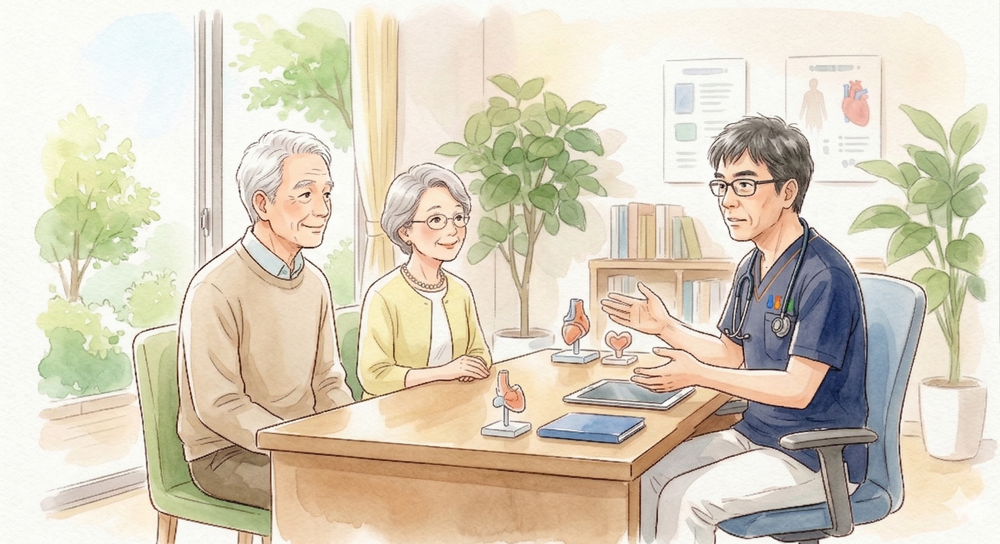
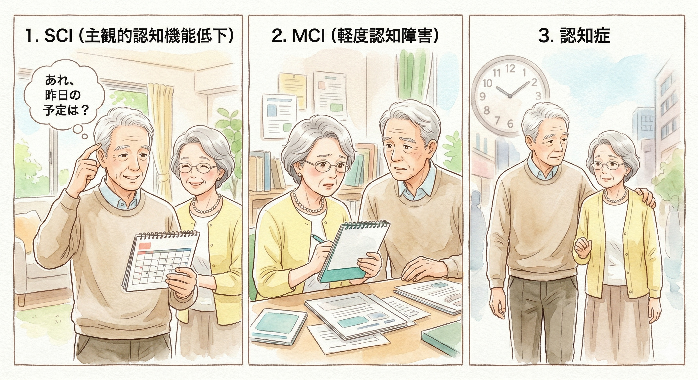
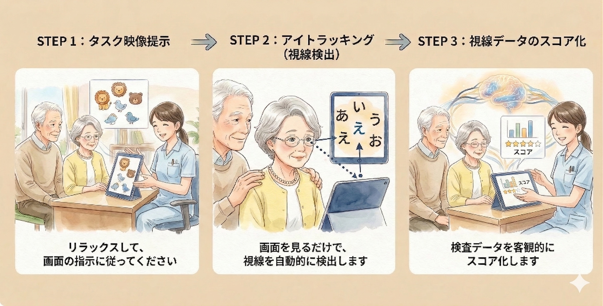
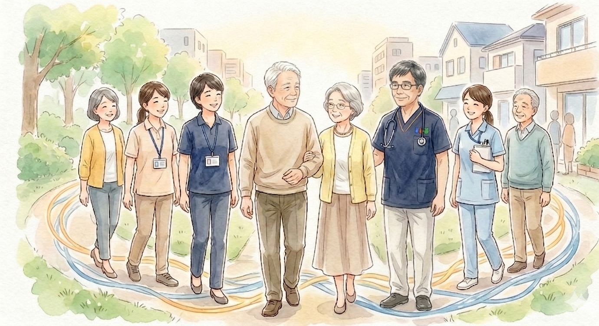

こんな症状・お悩みはありませんか？
- 最近、人の名前や物の名前がすぐに出てこない
- 同じことを何度も聞いたり、言ったりする
- お薬の飲み忘れや、管理の間違いが増えるようになった
- 以前楽しんでいた趣味に興味を示さなくなった、外出がおっくうになった
- 家族の様子が少しおかしい気がするが、どう受診を勧めたらいいか分からない
そもそも「認知症」とは？
認知症とは、脳の病気や障害によって脳細胞がダメージを受け、記憶力や判断力が低下し、日常生活に支障をきたす状態です。主な症状は「物忘れ（記憶障害）」や「場所・時間が分からなくなる（見当識障害）」などで、主な原因にアルツハイマー型、血管性、レビー小体型などがあります。
「もの忘れ」から「認知症」へのステップ
認知症は、ある日突然発症するものではなく、長い年月をかけて段階的に進行していきます。早い段階で気づき、対策を始めることが大切です。

1. SCI
(主観的認知機能低下)
検査では明らかな異常が出ないものの、ご自身で「最近もの忘れが増えた」「頭の回転が鈍くなった」と自覚している状態です。実は、この段階からの予防意識が非常に重要です。
2. MCI
(軽度認知障害)
年齢相応以上のもの忘れや認知機能の低下が見られるものの、日常生活には支障がない状態です。この段階で適切な対策を行えば、健常な状態に回復する可能性があると言われています。
3. 認知症
認知機能の低下が進行し、サポートなしでは自立した日常生活を送ることが困難になった状態です。
なぜ、循環器内科（ハートクリニック）で認知症を診るのか？
心臓や血管の専門医である当院が、認知症診療に力を入れる最大の理由は、「動脈硬化」と「認知機能の低下」が密接に結びついているからです。
認知症の代表的なものに「アルツハイマー型認知症」や「血管性認知症」がありますが、実はどちらも高血圧や糖尿病、脂質異常症といった生活習慣病（血管の老化）が大きく関与していることが近年の研究で分かっています。
認知症は「予防・遅延」できる時代へ
世界的な医学誌Lancet（ランセット）の2024年の最新報告によると、認知症のリスク因子のうち約45%は、高血圧や糖尿病の治療、運動不足の解消など、適切な生活習慣の改善によって予防、または発症を遅らせることが可能であるとされています。

つまり、日々の生活習慣病を適切にコントロールし、血管を若々しく保つことは、心筋梗塞などを防ぐだけでなく、認知症の予防や進行を遅らせること（脳の健康を守ること）にも直結するのです。
当院では「血管をケアすることで、脳を守る」という視点から、認知症診療に取り組んでいます。
当院での検査・受診の流れ
「認知症の検査」と聞くと、ご本人もご家族も不安を感じられるかもしれません。当院では、患者様のお気持ちに寄り添い、なるべく心理的負担の少ない形で現在の状態を把握し、適切な方針をご提案します。
問診・ご相談
まずはご本人やご家族から、日頃の様子やご不安に思っていることをじっくりと伺います。「なんとなく心配（SCIかもしれない）」という段階でも、どうぞお気軽にご相談ください。
各種検査（認知機能検査など）
現在の状態を客観的に評価するため、以下の検査を組み合わせて行います。
- 標準的な認知機能検査
改訂長谷川式簡易知能評価スケール（HDS-R）や、ミニメンタルステート検査（MMSE）を実施し、認知機能を評価します。 - 負担の少ない新しい検査（ミレボ）
「クイズ形式のテストは間違えたら恥ずかしい」といった心理的な抵抗がある方のために、iPadの画面を数分間眺めるだけの視線検出検査「ミレボ」にも対応しております。心理的負担がなく、客観的な数値で現状を把握できます。
- その他の検査
生活習慣病の評価のための簡便な血液検査（微量採血）などを実施し、総合的に判断します。
結果のご説明と今後の方針決定
検査結果に基づき、現在のご状態を分かりやすくご説明します。
- 当院での継続治療
生活習慣病のコントロールによる「認知症の予防・進行の遅延」を目指した治療と生活指導を丁寧に行います。 - 専門医療機関へのご紹介
抗アミロイドβ抗体治療薬の適応検討が必要な場合や、より高度な画像診断（MRIなど）が必要な場合は、認知症サポート医として、地域の専門医療機関（認知症疾患医療センターなど）へスムーズにお繋ぎします。 - 地域全体での包括的な伴走（サポート）
認知症のケアは、ご本人の医療だけでなく、ご家族の不安解消や日々の生活支援も非常に重要です。当院では、地域包括支援センターやケアマネージャー、訪問看護ステーションなどと密に連携し、ご本人とご家族を「地域ぐるみ」で継続的に支える体制を整えています。
